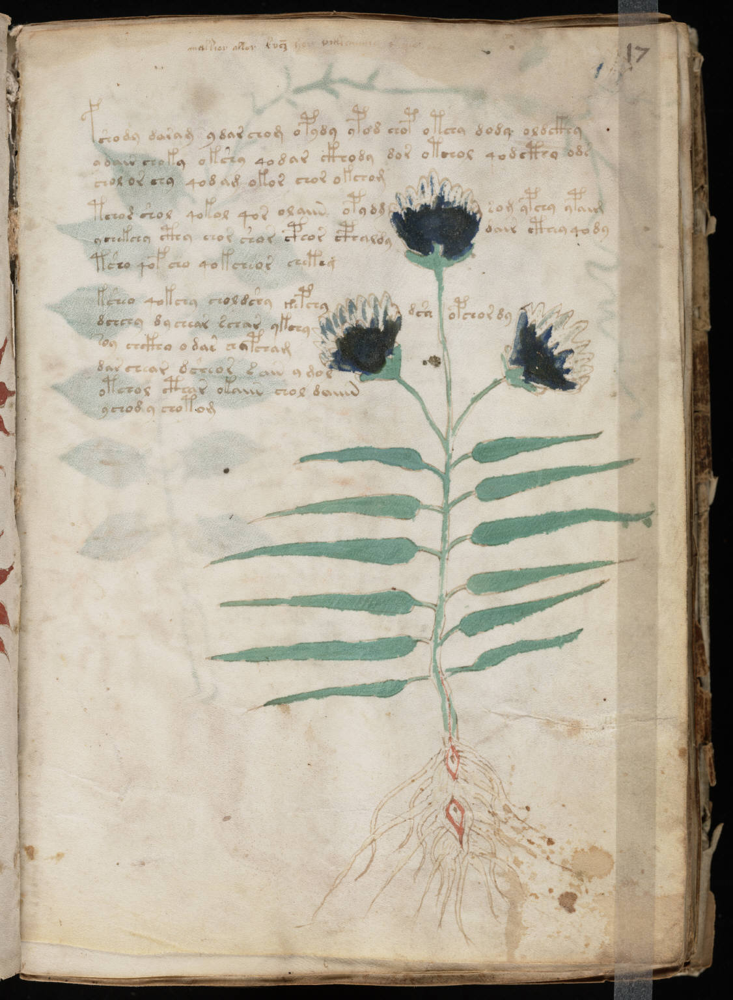

伏尼契手稿中文導讀
一本約六百年前寫成、至今仍未被可靠解讀的圖像手稿：植物、星象、浴池、藥罐與未知文字的系統化入門。
適用於閱讀、YouTube 腳本、AI Agent 知識庫與後續逐頁研究。
目錄
這不是「已破解翻譯本」，而是把可靠史料、主流研究、爭議假說與可執行研究方法分層呈現的導讀。任何聲稱已完整翻譯的內容，都應先檢查是否經同行評審、能否重現、是否能一致解釋全書。
一分鐘認識伏尼契手稿

流傳史與年代
1404–1438 羊皮紙最可能的製作年代。這是材料年代，不一定等於書寫的精確年份，但通常不會相差太久。
17 世紀 布拉格收藏家 Georg Baresch 曾向耶穌會學者 Athanasius Kircher 求助。Jan Marek Marci 後來把手稿寄給 Kircher，隨書信件成為早期流傳的重要證據。
1912 古書商 Wilfrid M. Voynich 從義大利 Frascati 附近的耶穌會收藏中購得手稿，並積極向學界宣傳。
1961–1969 手稿經 Anne Nill、書商 H. P. Kraus 之手，最終捐贈給耶魯 Beinecke 圖書館。
2009 四份羊皮紙樣本接受加速器質譜放射性碳定年。
今日 高解析掃描、轉寫資料、字形編碼與計算語言學工具，使全球研究者可以遠端協作，但完整解讀仍未形成學術共識。
可以確定與不能確定
| 層級 | 目前狀態 |
|---|---|
| 高可信 | 羊皮紙為十五世紀初；手稿確實是古物；具有穩定書寫規律與多個圖像區段。 |
| 中可信 | 內容可能與草藥、醫療、占星或自然哲學有關；存在多名抄寫者或不同書寫手。 |
| 未定 | 語言、編碼方式、作者、地點、真正用途、每幅植物的物種。 |
手稿的六大區段
| 區段 | 主要圖像 | 常見推測 | 注意事項 |
|---|---|---|---|
| 植物（Herbal） | 每頁一至兩株大型植物 | 草藥學、藥性、採集指南 | 多數無法無歧義辨識，常呈現拼合感。 |
| 天文／占星 | 日月、星盤、黃道十二宮 | 曆法、醫療占星、採藥時機 | 部分符號可辨，但文字仍未知。 |
| 浴療／生物 | 裸女、池槽、管道、綠色液體 | 浴療、婦科、生殖、體液循環 | 「生物學」是現代方便命名，不代表真是解剖學。 |
| 宇宙圖 | 同心圓、折頁、九玫瑰圖 | 宇宙論、地圖、城市或流程圖 | 圖像極複雜，解讀差異很大。 |
| 藥劑 | 根、葉、切片、藥罐 | 配藥、藥材庫、處方索引 | 可能與前方植物頁形成交叉索引。 |
| 條目／配方 | 短段文字，左側常有星號 | 配方、步驟、索引條目 | 缺乏可讀標題，無法確認條目真正功能。 |
神祕植物：為什麼看起來不像地球植物？
五種可能性
| 假說 | 說明 | 目前評估 |
|---|---|---|
| 風格化寫生 | 中世紀草藥書重視可用特徵，不一定追求現代植物學的精確比例。 | ★★★★☆ |
| 複合植物 | 根、葉、花可能取自不同物種，為了表達藥材組合、性質或分類。 | ★★★★☆ |
| 抄寫失真 | 經多次轉抄後，細節逐代變形，尤其是作者未見過原植物時。 | ★★★☆☆ |
| 象徵／記憶圖 | 圖像可能是助記符、器官隱喻、星象對應或秘密學派的符號。 | ★★★☆☆ |
| 滅絕或外星植物 | 吸引人，但目前缺乏獨立證據，也無法解釋整套文字規律。 | ★☆☆☆☆ |
植物辨識的工程化方法
- 把根、莖、葉、花、果實分割成獨立區域。
- 分別記錄形狀、葉序、葉緣、花瓣數、根型與色彩。
- 與同時代草藥抄本比較，而不是只和現代照片比較。
- 允許「一張圖由多物種部件構成」的候選模型。
- 每個候選必須留下反證條件，避免只挑相似部分。
未知文字：它像語言，卻又很不尋常
研究者通常把文字暫稱為 Voynichese。為了計算分析，常使用 EVA（Extensible Voynich Alphabet）等轉寫系統，把未知字形映射成拉丁字母代碼；這只是轉寫，不是翻譯。
詞形有高頻模式；某些字形偏好出現在詞首或詞尾；不同區段的詞彙分布不同；頁面主題、抄寫者與統計群聚之間存在關聯。這些現象使「完全隨機亂寫」較難成立，但仍不能直接證明它是正常自然語言。
為何傳統密碼學難以處理
- 沒有已知明文、雙語對照或確定專有名詞。
- 字母邊界與詞界可能是誤判。
- 可能同時包含縮寫、同音替換、字形變體或多層編碼。
- 圖像和文字的對應關係尚未確認。
主要破解理論評估
| 理論 | 優點 | 主要問題 | 可信度 |
|---|---|---|---|
| 加密的自然語言 | 可解釋詞頻與區段差異 | 尚無方案能穩定翻譯全書並預測新頁 | ★★★☆☆ |
| 人工語言／分類碼 | 可解釋規律性與低熵 | 缺乏碼本；圖文對應不明 | ★★★☆☆ |
| 中世紀縮寫系統 | 符合醫藥與拉丁書寫傳統 | 字形與展開規則尚未被一致證明 | ★★★☆☆ |
| 自動生成／偽書 | 能解釋重複近似詞 | 製作成本高，且主題群聚與抄手差異需額外解釋 | ★★☆☆☆ |
| 希伯來文、土耳其語、羅曼語、Pahlavi 等特定語言 | 個別片段常可配出讀法 | 容易產生任意對應；通常無法覆蓋全書 | ★–★★☆☆☆ |
| 外星／失落文明 | 敘事吸引人 | 沒有可驗證證據，亦非必要假設 | ☆☆☆☆☆ |
「真正破解」應通過的測試
- 事先固定字形、詞界與讀法規則。
- 在未參與建模的頁面上盲測。
- 同一詞在不同頁面應保持一致語義或可解釋變化。
- 翻譯必須與圖像、文法、年代、材料文化同時相容。
- 由獨立研究者重現，不依賴作者臨場調整。
常見說法核對
| 說法 | 判定 | 較精確的說法 |
|---|---|---|
| 「書裡全是地球上沒有的植物」 | 誇大 | 多數植物無法確定辨識；這不等於證明它們不存在。 |
| 「AI 已經破解」 | 尚無共識 | 有許多模型與語言假說，但沒有被廣泛接受、可重現的完整翻譯。 |
| 「它是近代惡作劇」 | 不太可能 | 羊皮紙確為十五世紀初，墨水與物質研究也支持古代製作；但內容是否有意義仍可討論。 |
| 「作者是 Roger Bacon」 | 年代不符 | Bacon 逝於 1294，早於羊皮紙年代一個多世紀。 |
| 「裸女代表外星生物」 | 無證據 | 更接近浴療、醫療占星、婦科或象徵性體液系統的研究方向。 |
如何自己閱讀原稿
- 先看館藏頁：確認 folio 編號、正反面（r = recto，v = verso）與折頁。
- 先圖後文：辨識區段、構圖、標籤位置、文字避開圖像的方式。
- 比鄰頁：不要孤立解釋單頁；比較前後頁的圖像與高頻詞。
- 分層筆記：觀察、推測、外部證據、反證必須分欄。
- 保留不確定性：使用信心分數與候選集合，不做單一斷言。
示範頁導讀：植物頁
客觀觀察
頁面中央是一株具有細長羽狀葉、三個深色花頭及纖細根系的植物。文字段落位於植物上方與左側，書寫時似乎刻意繞開圖像。植物的比例與根、葉、花之間的關係不完全符合現代植物學圖鑑。
候選解釋
藥用植物寫生多物種拼合象徵性花頭抄本變形
不能從這一頁推出的結論
無法僅憑外觀斷定它是已滅絕植物、外星植物或某一確切物種；也無法證明旁邊文字就是植物名稱或藥效。合理研究需要跨頁詞彙、同時代圖譜與材料分析共同支持。
AI 深度分析工作流
建議模型模組
| 模組 | 用途 | 輸出 |
|---|---|---|
| Layout segmentation | 分離文字、植物、星盤、人物、容器 | polygon / mask |
| Glyph detector | 偵測字形及連字 | 字形框、置信度 |
| Writer clustering | 依筆跡分群 | scribe embedding |
| Topic model | 比對詞彙群與圖像區段 | 頁面主題分布 |
| Plant-part retrieval | 根、葉、花分部件相似搜尋 | 候選清單與反例 |
| Hypothesis evaluator | 對翻譯理論做留出頁盲測 | 一致性、覆蓋率、複雜度 |
Agent Prompt 模板
後續資料庫與檔案結構
核心資料表：folios.csv
| 欄位 | 說明 |
|---|---|
| folio_id | 例如 f1r、f78v |
| section | 植物、天文、浴療、宇宙、藥劑、配方 |
| quire / bifolio | 書帖與雙葉關係 |
| scribe | 抄寫者群組與信心 |
| image_url / license | 來源與使用授權 |
| notes_path | 逐頁 Markdown |
| review_status | 未整理、初審、交叉驗證、完成 |
後續全卷版驗收標準
- 頁面覆蓋：所有現存 folio 均有索引與高解析來源。
- 來源可追溯：每個歷史事實、辨識假說與圖像均附來源。
- 分層清楚：事實、推測、都市傳說不混寫。
- 逐頁一致：使用固定模板，可由程式自動轉 PDF、HTML 與知識庫。
- 搜尋可用：可按頁碼、區段、字形、植物部件、研究者與理論搜尋。
- AI 可評測：任何翻譯假說都必須有訓練集／留出集與可重現分數。
- 版權合規：優先使用公有領域原作與清楚授權的掃描圖。
名詞表
| 名詞 | 解釋 |
|---|---|
| Folio | 手稿的一葉；正面為 recto（r），背面為 verso（v）。 |
| Codex | 裝訂成冊的手抄本形式。 |
| Voynichese | 對伏尼契手稿未知文字的非正式稱呼。 |
| EVA | Extensible Voynich Alphabet，研究用字形轉寫系統，不是翻譯。 |
| Paleography | 古文字學，研究書寫形態、年代與抄寫者。 |
| Codicology | 古籍形制學，研究書帖、裝訂、材料與製作過程。 |
| Radiocarbon dating | 透過碳-14 測定有機材料年代的方法。 |
| Rosettes folio | 著名大型折頁，包含九個相連圓形區域。 |
參考資料與延伸閱讀
- Yale Beinecke Rare Book & Manuscript Library, “The Beinecke Cipher (Voynich) Manuscript,” MS 408. https://beinecke.library.yale.edu/beinecke/collections/beinecke-cipher-voynich-manuscript
- Yale Beinecke, “Voynich Manuscript” collection highlight. https://beinecke.library.yale.edu/collections/highlights/voynich-manuscript
- University of Arizona / Phys.org, “Experts determine age of book nobody can read” (2011), regarding radiocarbon dating. https://phys.org/news/2011-02-experts-age.html
- René Zandbergen, Voynich Manuscript research site: illustrations, history, radiocarbon dating and bibliography. https://www.voynich.nu/
- Rachel Sterneck, Annie Polish, Claire Bowern, “Topic Modeling in the Voynich Manuscript,” 2021. https://arxiv.org/abs/2107.02858
- Wikimedia Commons, “Voynich Manuscript (33).jpg,” public-domain reproduction sourced from Yale Beinecke. https://commons.wikimedia.org/wiki/File:Voynich_Manuscript_(33).jpg
編輯原則：優先採用館藏機構、材料研究與可重現的計算研究。對未經同行評審或無法覆蓋全書的「破解」主張，只作為假說紀錄，不視為定論。